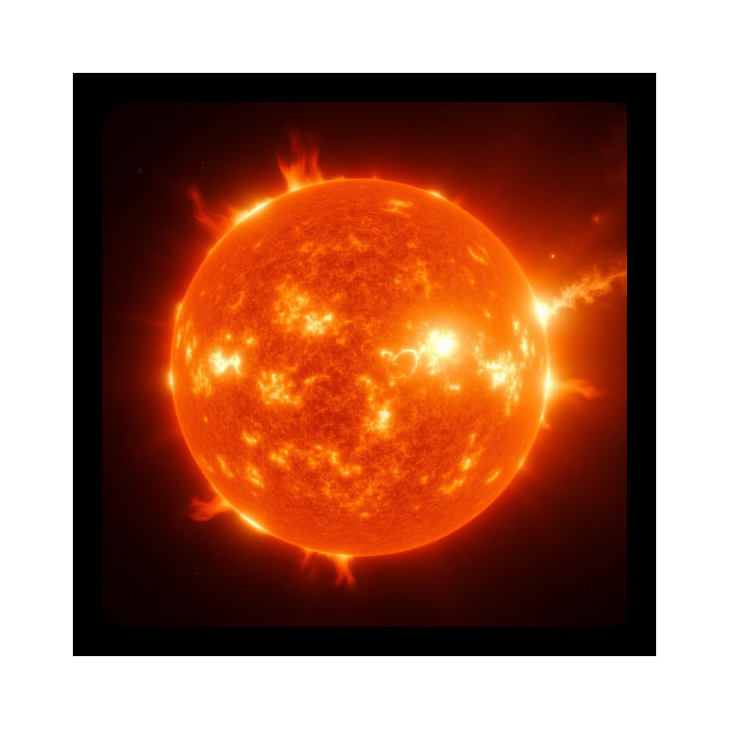

Marker 1: Sun
This marker will display the Sun in AR.
Marker 2: Alien Ship

This marker will display an Alien ship in AR.
Marker 3: International Space Station
This marker will display the International Space Station in AR.
Marker 4: Astronaut
This marker will display an Astronaut in AR.
Marker 5: Alien
This marker will display an Alien in AR.